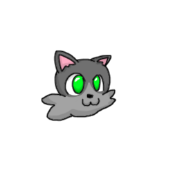
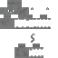

Who is my fursona?
My fursona is named "Katty". They are are a gray tabby cat with emerald
green eyes and a light gray muzzle.
In fact, you've been looking at Katty this whole time navigating my website,
he's the little icon in the upper-left of each page.
Their full official “title” so to speak, is "Katty the Gray Tabby Cat".
The history of Katty.
Katty wasn't originally my fursona, nor was that the intent.
Originally when I was creating Katty, I was designing them to
be a video-game character.
The game in question would have been called "Kitty Katty" and based off of
a game called "Banjo Kazooie".
"Banjo" and "Kazooie" were the names of the two main characters in the game,
hence the weird naming in my inspired game's title, I even designed a similar
looking logo.
The design of Katty.
The first image of Katty to exist was just a head.
This design was created by <redacted> as a gift and shared
with my on September 17th, 2019.
The image below is the original image.

Two years and something months later, I had a Amirah Mounger, a peer
of mine, commission a drawing of Katty.
It was commissioned on May 10th, 2022 and given to me on
May 12th, 2022.
Katty_KittyKatty).